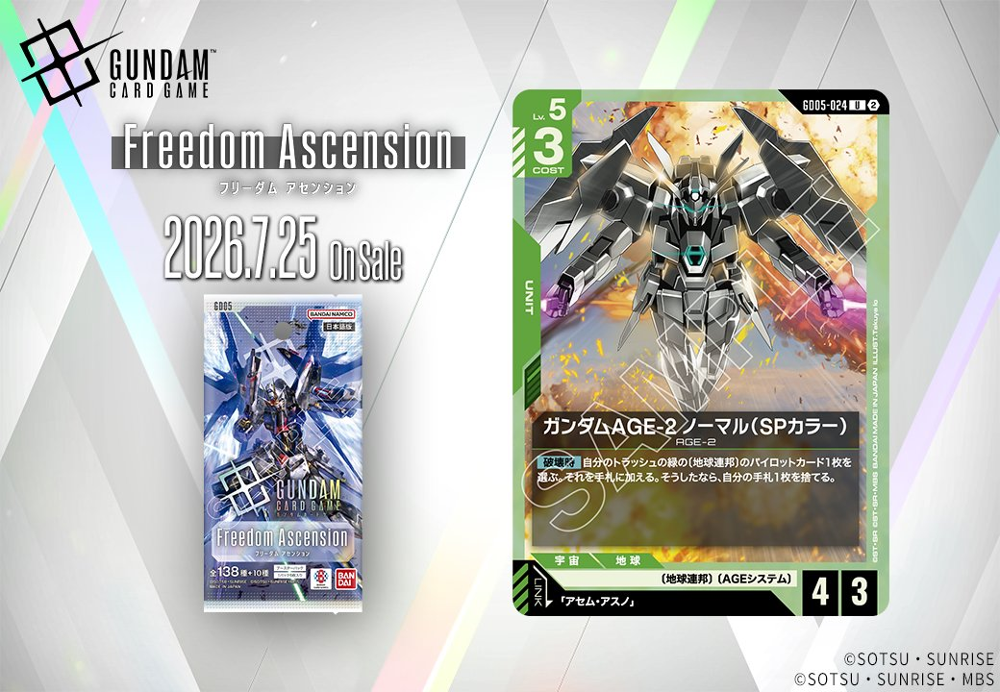
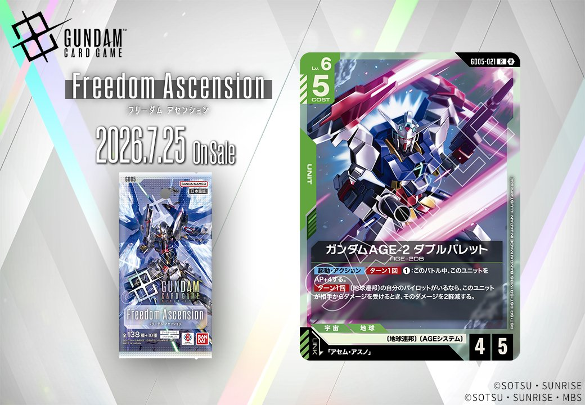
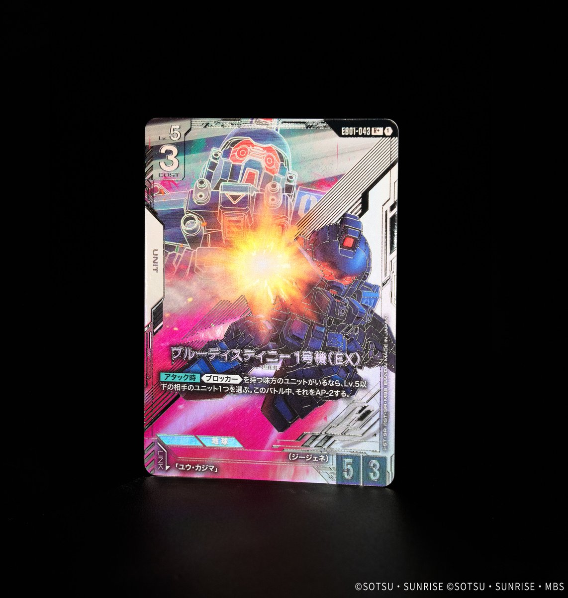
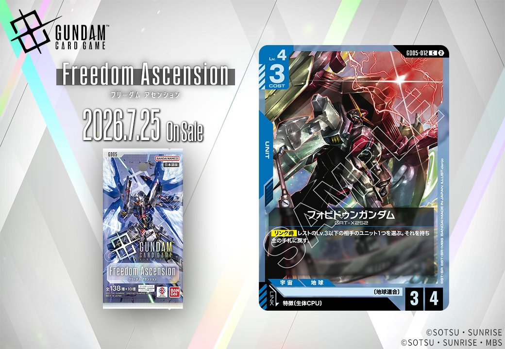
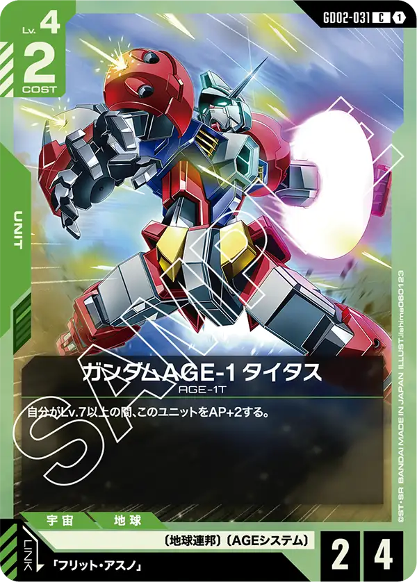
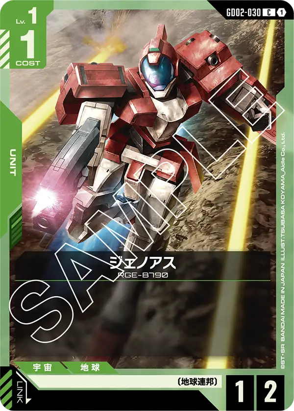

今回は、2026年7月25日発売の拡張パック「Freedom Ascension」から収録される3枚と、「Eternal Nexus」から収録される1枚、計4枚の新規UNITカードを紹介します。緑のガンダムAGE-2シリーズ2種、青のフォビドゥンガンダム、そして白のブルーディスティニー1号機（EX）と、異なる色とリンク条件を持つUNITが登場します。

ガンダムAGE-2 ノーマル (SPカラー) (GD05-024)
| 色 | 緑 | タイプ | UNIT |
| Lv | 5 | コスト | 3 |
| AP | 4 | HP | 3 |
| 特徴 | 〔地球連邦〕、〔AGEシステム〕 | ||
| リンク条件 | 「アセム・アスノ」 | ||
効果: 【破壊時】自分のトラッシュの緑の〔地球連邦〕のパイロットカード1枚を選ぶ。それを手札に加える。そうしたなら、自分の手札1枚を捨てる。
ガンダムAGE-2 ノーマル (SPカラー)は、Lv.5/COST3/AP4/HP3の標準的なステータスを持つ緑の地球連邦ユニットです。【破壊時】効果により緑の地球連邦パイロットを回収できるため、アセム・アスノとのリンクを維持しやすく、手札交換による質の向上も期待できます。破壊されることが前提の効果ですが、リソース確保に貢献する堅実な性能を持つカードと言えるでしょう。

ガンダムAGE-2 ダブルバレット (GD05-021)
| 色 | 緑 | タイプ | UNIT |
| Lv | 6 | コスト | 5 |
| AP | 4 | HP | 5 |
| 特徴 | 〔地球連邦〕、〔AGEシステム〕 | ||
| リンク条件 | 「アセム・アスノ」 | ||
効果: 【起動】アクション ターン1回 1: このバトル中、このユニットをAP+4する。〔地球連邦〕の自分のパイロットがいるなら、このユニットが相手からダメージを受けるとき、そのダメージを2軽減する。
ガンダムAGE-2 ダブルバレットは、AP4/HP5という標準的なステータスにコスト1を支払うことでAP+4の大幅強化が可能な緑ユニット。自軍に地球連邦のパイロットがいれば被ダメージを2軽減できるため、アセム・アスノとリンクさせることで高い耐久力を発揮する。 リンク時にはアセム効果でAP+1と突破1を得られるため、起動効果と合わせてAP9の高火力アタッカーとして運用でき、相手ユニットを破壊しながらシールドへのダメージも狙える攻防一体の性能を持つ。

ブルーディスティニー1号機（EX） (EB01-043)
| 色 | 白 | タイプ | UNIT |
| Lv | 5 | コスト | 3 |
| AP | 5 | HP | 3 |
| 特徴 | ジージェネ | ||
| リンク条件 | ユウ・カジマ | ||
効果: 【アタック時】《ブロッカー》を持つ味方のユニットがいるなら、Lv.5以下の相手のユニット1つを選ぶ。このバトル中、それをAP-2する。
ブルーディスティニー1号機（EX）は、味方に《ブロッカー》持ちユニットがいる場合に真価を発揮する条件付きデバフユニットです。アタック時にLv.5以下の相手ユニットをAP-2できるため、自身のAP5と合わせてHP7までの敵を突破可能になり、中盤の盤面制圧に貢献します。《ブロッカー》を用意する必要があるため単体では機能しませんが、白の防御的な構成と相性が良く、ユウ・カジマとのリンクでさらなるシナジーも期待できるカードです。

フォビドゥンガンダム (GD05-012)
| 色 | 青 | タイプ | UNIT |
| Lv | 4 | コスト | 3 |
| AP | 3 | HP | 4 |
| 特徴 | 〔地球連合〕 | ||
| リンク条件 | 特徴に生体CPUを持つPILOT | ||
効果: 【リンク時】レストのLv.3以下の相手のユニット1つを選ぶ。それを持ち主の手札に戻す。
フォビドゥンガンダムは、青のLv.4ユニットとして【リンク時】にレストのLv.3以下の相手ユニットを手札に戻す除去効果を持つ。生体CPUを持つパイロットとのリンク条件があるため、専用構築が必要だが、相手の展開を崩しつつテンポアドバンテージを取れる性能。コスト3でAP3/HP4というスタッツも及第点で、中盤以降の盤面コントロールに貢献できそうだ。

関連カード
-
ガンダムAGE-2 ノーマル(GD03-019)緑系デッキ内採用率0.1% (2デッキ)
-
アセム・アスノ(GD03-088)緑系デッキ内採用率0.1% (2デッキ)
-

ガンダムAGE-1 タイタス(GD02-031)緑系デッキ内採用率0% (1デッキ) -

ジェノアス(GD02-030)緑系デッキ内採用率0% (1デッキ) -
アセム・アスノ(GD03-088_p1)緑系デッキ内採用率0% (0デッキ)
-
ガンダムAGE-2 ノーマル (SPカラー)(GD05-024)NEW緑系 — 同色・共通特徴: 地球連邦、AGEシステム（新カード）
-
 溢れる慈愛(GD01-118)白系デッキ内採用率41.1% (1586デッキ)
溢れる慈愛(GD01-118)白系デッキ内採用率41.1% (1586デッキ) -
 ガンダム・ルブリス(GD01-086)白系デッキ内採用率38% (1469デッキ)
ガンダム・ルブリス(GD01-086)白系デッキ内採用率38% (1469デッキ) -
 エールストライクガンダム(ST04-001)白系デッキ内採用率36.2% (1398デッキ)
エールストライクガンダム(ST04-001)白系デッキ内採用率36.2% (1398デッキ) -
 キラ・ヤマト(ST04-010)白系デッキ内採用率35.9% (1385デッキ)
キラ・ヤマト(ST04-010)白系デッキ内採用率35.9% (1385デッキ)